每周進度 <<
Previous Next >> stage2-bg1
stage1-bg8
w1
影片:
2021 協同產品設計實習 stage1 bg8
w2
影片:
w2 2021 協同產品設計實習 stage1 bg8
檔案下載:https://drive.google.com/file/d/1A2OD-HsjxqEZE4VA-dOrMSLWLWxn2uR6/view?usp=sharing
Day1
20210306
自動零食為食機的盒子完成
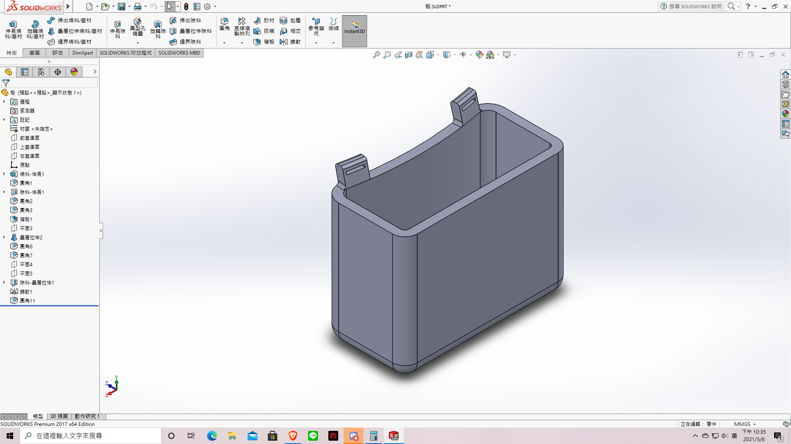
Day2
20210307
上升螺旋桿完成
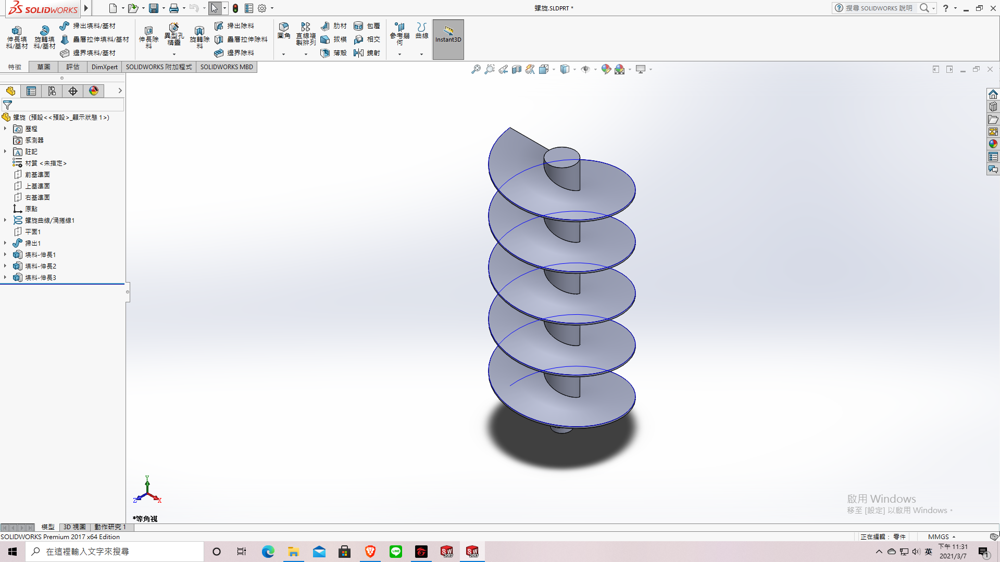
Day3
20210308
修改盒子:1.新增螺桿洞 2.加入斜坡讓食物集中
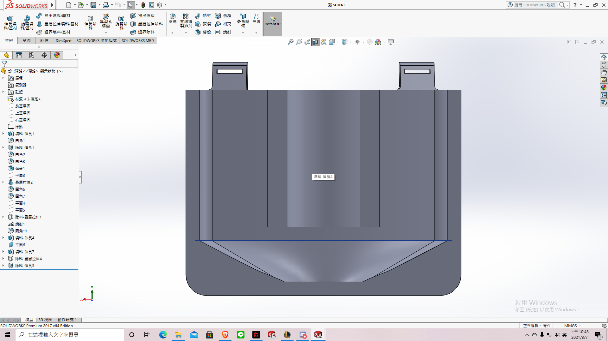
Day4
20210309
1.修改斜度 2.加入擋板
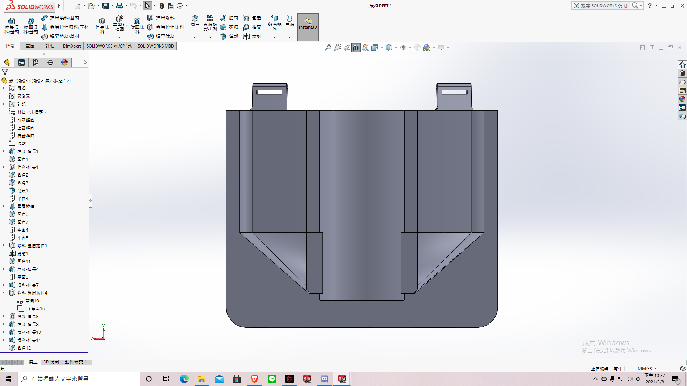
增加螺桿長度，讓模擬時穩定一點
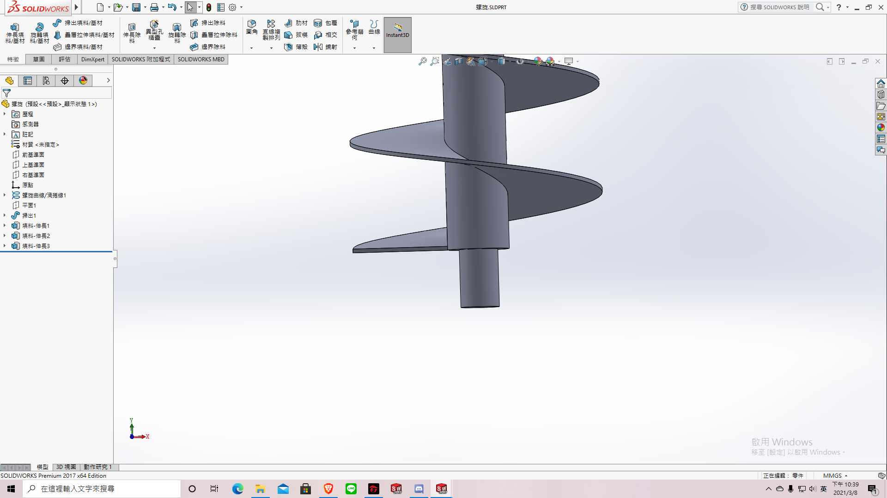
Day5
20210310
模擬時，球體會上不去，所以在底部增加斜角，方便將球體鏟起
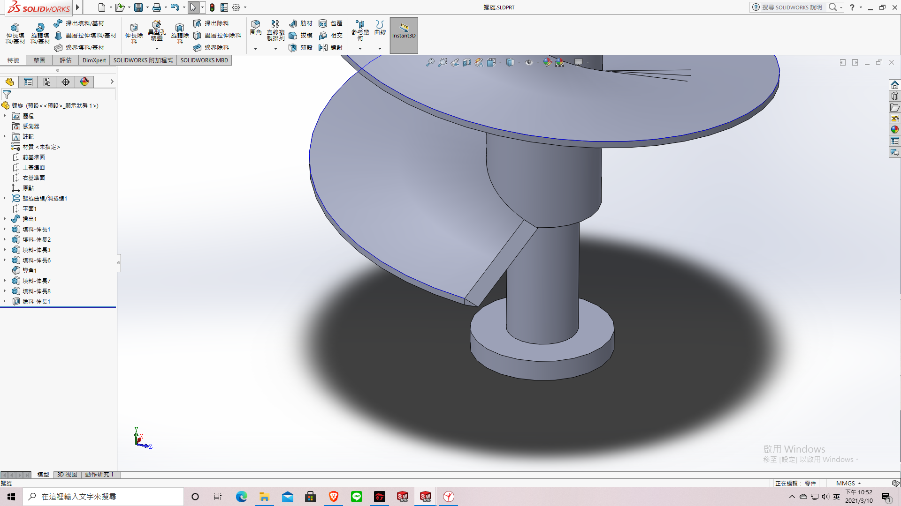
Day6
20210311
因為此機構垂直運行沒辦法將球體往上帶，加上我們想到更好的點子，所以我們決定換題目，但是沿用舊機構，以下是新主題(自動分球機)。
主體
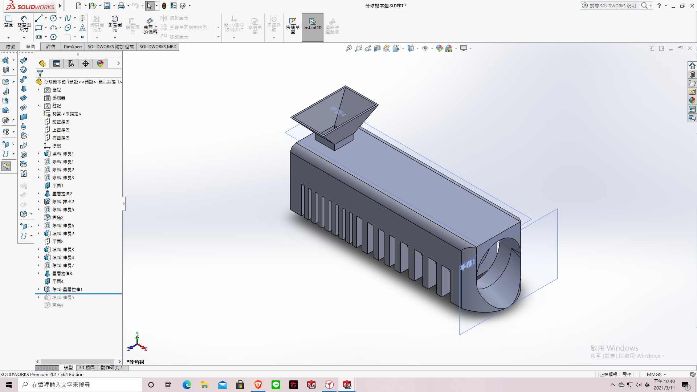
螺旋桿

w3
零件總結影片
圖案下載:https://drive.google.com/file/d/1A2OD-HsjxqEZE4VA-dOrMSLWLWxn2uR6/view?usp=sharing
20210313
模擬時發現孔比軸大，有間隙，旋轉時軸會跳飛，所以把孔改成與軸一樣直徑，30mm > 20mm
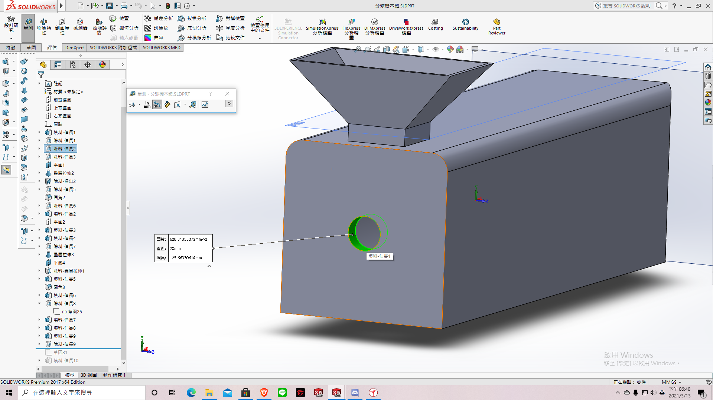
模擬時發現螺旋葉片會卡到縫裡，所以把一長條的縫改成洞
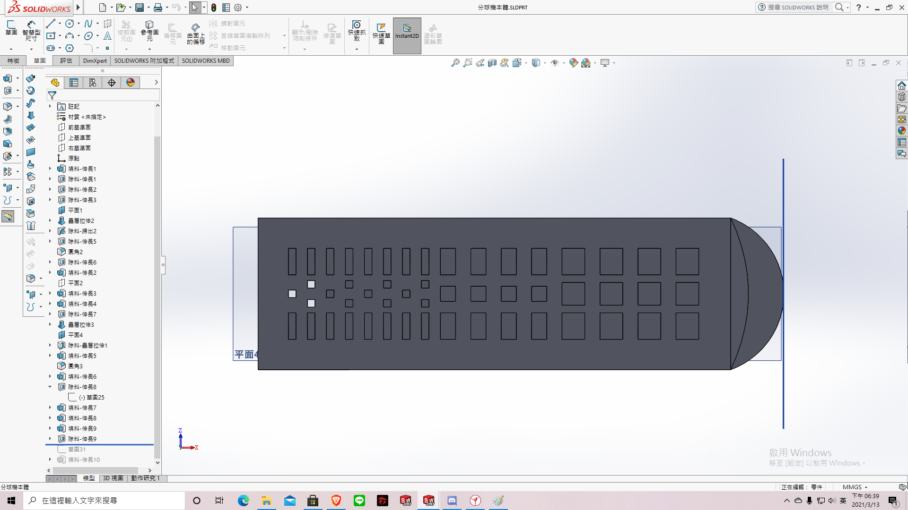
繪製鋼珠盒
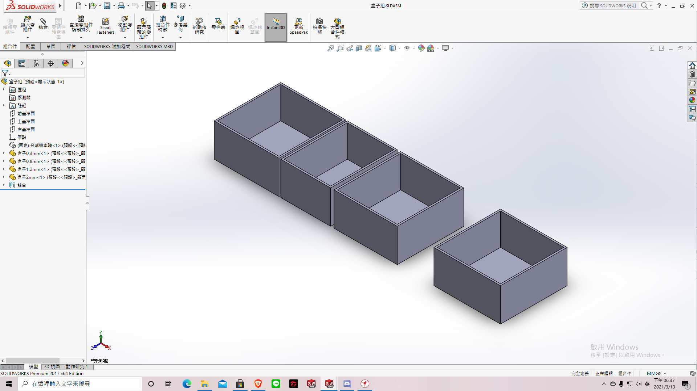
20210314
模擬時孔面與螺旋桿摩擦，導致螺旋桿莫名亂跳，因此加大孔徑
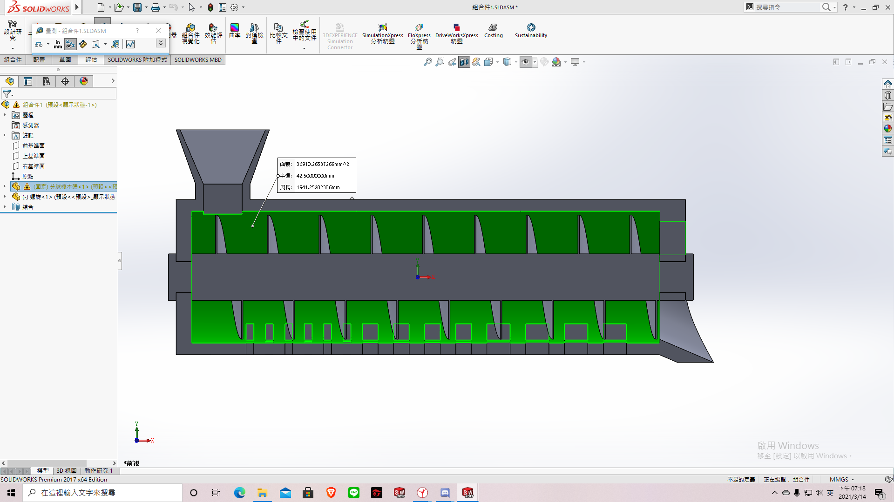
繪製大鋼珠盒，讓大量鋼珠慢慢涓流
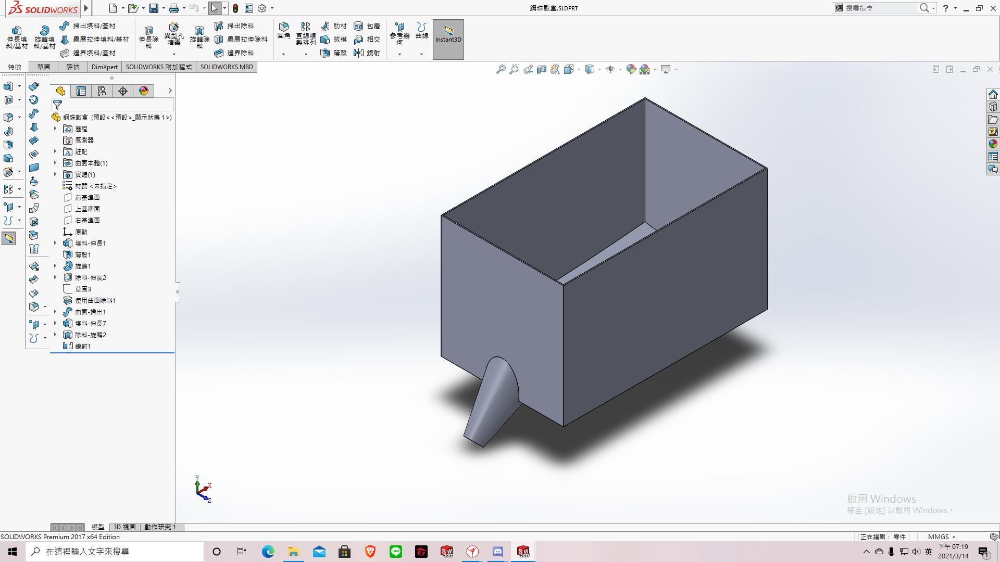1
每周進度 <<
Previous Next >> stage2-bg1